Where the tab's tools go, and a fold for the Updates line
You narrowed the candidates to T without its caption, T with Comment in the tray, and V. This round tries what you asked. The modality sits at a fixed place, Compose review and Comment become icons with tooltips, and the active tab's tools come off the tab row. The horizontal Updates line gets a fold.
The window's rows at 1280×852 on macOS, half scale, measured on the frames. V with its tools left of the tabs measures 772 and T 738, but both keep the tab row shared, which you found cluttered.
The modality, fixed in place
It floated because it was centred in whatever the name and the right-hand icons left over: 207 pixels right of the window's centre at 1280. Fixed, it can sit at the window's true centre, after the drawer toggles, or beside refresh. Centred, the name elides to fit on its left; RFC-BPR-0028 already says "centre, alone".
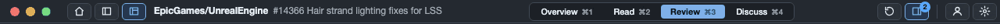
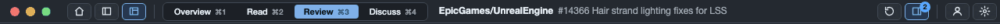
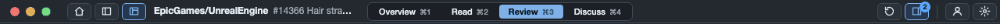
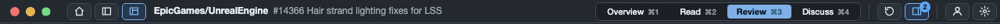
T at 1280, macOS dark.
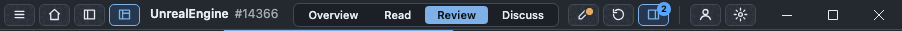
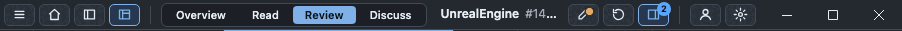
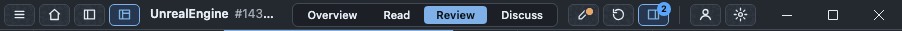
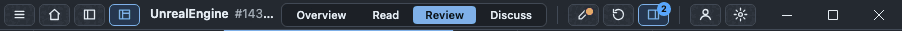
V at the Windows 902 floor: there is little room, so the choices converge. Centred yields 26 pixels left when the Compose icon needs them.
Where the active tab's tools go
The change and file positions and this file's progress. The tab row keeps only tabs in two of the three.
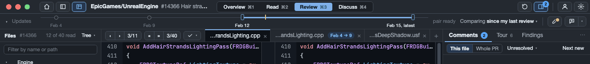
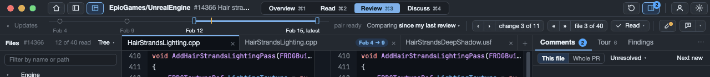
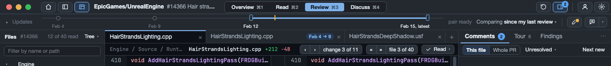
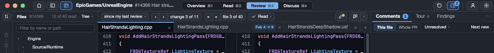
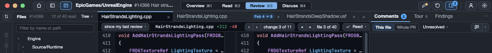
Folding the Updates line
The arrow before "Updates" folds the timeline to one line that still names the comparison and its dates. Its menu, the tools and the icons stay where they were. Folding frees only 6 pixels, because the row keeps the tools; what it buys is a quiet row when you aren't choosing updates. The window remembers the fold.
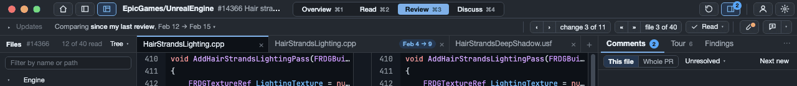
Compose review and Comment as icons
Both work as icons because each is reachable three other ways. The tooltip names the command and its key, and says whether a review draft is kept. The Pull Request menu lists both with their keys, ⌥R and ⌥C. The amber mark says a draft is waiting without a label. Comment's arrow still opens the Conventional Comments labels.
The risk is the first week: a pen icon is where people finish a review, and nobody finds it by reading. If that worries you, keep Compose review's label and make only Comment an icon.
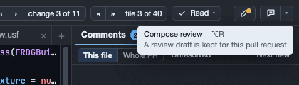
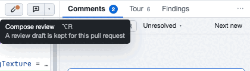
The frames
← and → step through the directions. A combination with no frame shows the nearest one and says so.
Recommendation
T, with the tools on the Updates line and the line foldable. The line becomes the review bar: timeline, comparison, the active tab's position and progress, then Compose review and Comment as icons. The tab row holds only tabs, with full names. Folded, the bar is one quiet line, and the comparison gets 744 pixels at 1280×852, 37 more than today.
This changes my recommendation from V. Once the tools leave the tab row, V gives up its lead: 744 with its tools above the tabs, the same as T folded. T keeps 34 pixels more code width and the dates in view, one click from folded. It also keeps BPR-0737's full-width line. V only stays ahead with its tools back on the tab row.
The modality, centred. That is RFC-BPR-0028's "centre, alone", now measured from the window rather than from what's left over.
If Comment should sit with the conversation, the Comment-in-the-tray variant is the same bar with one icon fewer. Comment then lives in the Comments tray and beside the current line.
The decisions I'm asking for
- Where does the modality sit?Proposed: centred on the window.
- Where do the active tab's tools go?Proposed: above the tabs, on the Updates line (T). The alternatives are a bar below the tabs (26 pixels) or a row above the tabs in V.
- T or V?Proposed: T, with the fold.
- Icons for Compose review and Comment?Proposed: yes, with the tooltip, the menu items and the keys. Or keep Compose review's label.
- Comment in the bar, or in the Comments tray?Proposed: in the bar, with its label menu.
How the frames were made
As in v4, one frames file draws the window with the accepted tokens and the product's measured rows, now with four more switches: the modality's place, icons or labels, where the tab's tools go, and the fold. Headless Chrome rendered 47 frames at their exact window size, device scale 1; each was reduced to 256 colours and looked at, and every height was read back from the page's own layout. The Windows frames use the Mac's type.